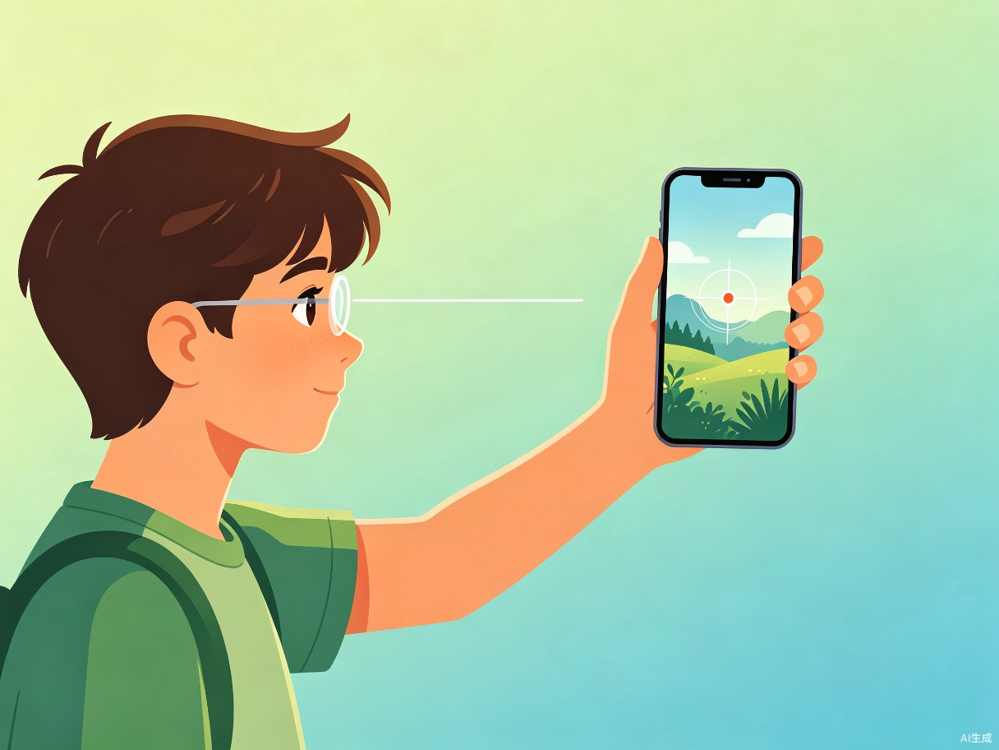
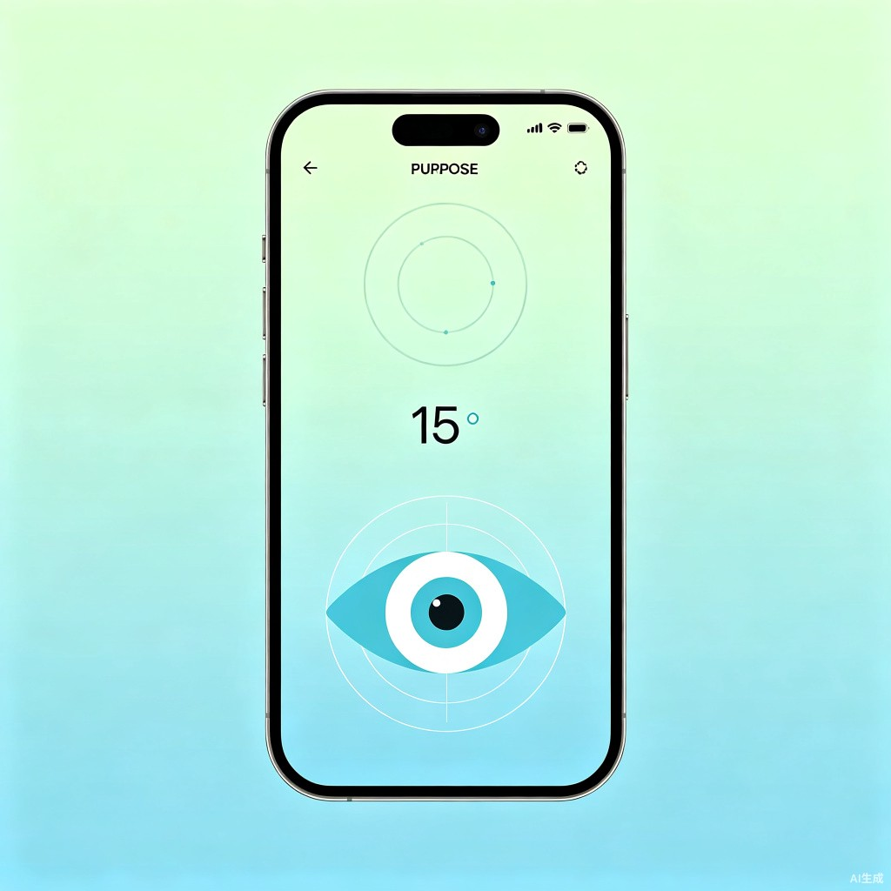

明眸Eye
青少年智能视力调节助手 — 让每一次眨眼都成为呵护
项目背景
根据国家卫健委最新数据，我国青少年近视率已超 50%，其中初中生近视率高达 71.1%，高中生更是达到 80.5%。长时间近距离用眼、缺乏科学的视力调节训练，是导致近视加深的主要原因。
传统的视力保护方案往往依赖家长监督或专业机构训练，存在成本高、依从性差、场景受限等问题。与此同时，智能手机已成为青少年的日常工具——如何让手机从"视力杀手"转变为"视力助手"，是本产品的核心命题。
产品概述
明眸Eye 是一款专为青少年设计的便携式视力调节训练应用。通过手机摄像头与智能引导算法，将专业的眼保健操与视功能训练转化为有趣、可量化的每日练习。
远近交替训练
引导眼睛在远景与近景目标间切换，放松睫状肌，缓解视疲劳。
摄像头定点追踪
利用手机摄像头识别环境物体，智能选择注视目标点。
智能倒计时
每个训练动作配有精准倒计时与语音提示，节奏科学可控。
多模式切换
支持远眺、近看、眼球跳动等多种训练模式自由切换。
核心功能详解
远近交替训练
基于眼科医学中的"调节-集合"原理，明眸Eye 设计了一套科学的远近交替注视训练。用户将手机置于眼前 30-40cm 处作为近点目标，应用语音引导用户抬头注视 6 米以外的远点目标，如此反复交替。
训练过程中，应用通过摄像头实时检测面部朝向，确保用户确实完成了远近切换动作，避免"假性训练"。系统会根据用户的适应程度，动态调整切换频率与持续时间。
摄像头智能选点
开启摄像头后，明眸Eye 会实时分析环境画面，自动推荐适合训练的注视目标：
- 近点模式：识别手机屏幕上显示的动态标记点
- 远点模式：识别窗外景物、墙面装饰、室内绿植等
- 跳点模式：在画面中生成移动目标，引导眼球追踪
用户也可以手动框选环境中的任意物体作为注视目标，系统会锁定该目标并给出视觉引导提示。
倒计时与节奏控制
每个训练环节都配有清晰的大屏倒计时，帮助用户掌握训练节奏：
- 准备阶段：3 秒倒计时，提示用户调整姿势
- 注视阶段：15-30 秒倒计时，提示保持注视
- 休息阶段：5 秒间歇，舒缓眼部肌肉
支持语音播报与柔和提示音，无需紧盯屏幕即可完成训练。
训练模式自由切换
明眸Eye 内置 4 大核心训练模式，满足不同场景与需求：
- 经典模式：标准远近交替，适合日常保健
- 跳点模式：眼球快速定位训练，提升调节灵敏度
- 追踪模式：跟随移动目标，锻炼眼外肌协调
- 自定义模式：自由组合各项参数，个性化训练
用户流程
flowchart TD
A[打开明眸Eye] --> B[选择训练模式]
B --> C[摄像头环境扫描]
C --> D[自动/手动选点]
D --> E[开始倒计时训练]
E --> F{训练完成?}
F -->|否| E
F -->|是| G[训练数据记录]
G --> H[生成日/周报]
H --> I[休息提醒]
界面原型

训练主界面
界面设计遵循"极简专注"原则，在训练过程中最大限度减少视觉干扰。
- 顶部摄像头取景框，实时显示注视目标
- 中央超大倒计时数字，清晰可读
- 底部动态眼肌示意图，引导训练动作
- 全屏色彩随训练阶段柔和过渡
技术实现要点
明眸Eye 采用端侧 AI + 云端数据分析的混合架构，在保障隐私的前提下实现智能训练体验。
商业模式
基础版免费
每日 1 次基础训练、经典模式、基础数据统计，降低使用门槛。
会员订阅
解锁全部训练模式、高级数据分析、个性化方案、无广告体验。
校园合作
与学校/眼科机构合作，提供班级视力管理后台与批量授权。
周边电商
护眼灯、防蓝光眼镜、叶黄素等护眼周边产品推荐与分销。
让每一个青少年都拥有明亮的未来
明眸Eye 将专业眼科训练科学融入日常手机使用场景，用技术创新守护下一代的视力健康。
从"被动防护"到"主动训练"，从"专业依赖"到"随手可得"。